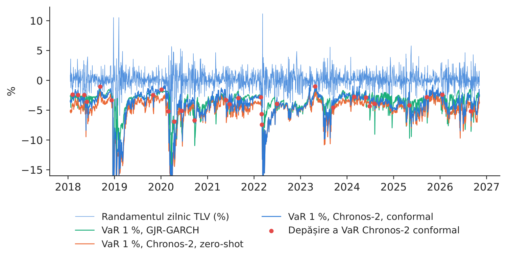
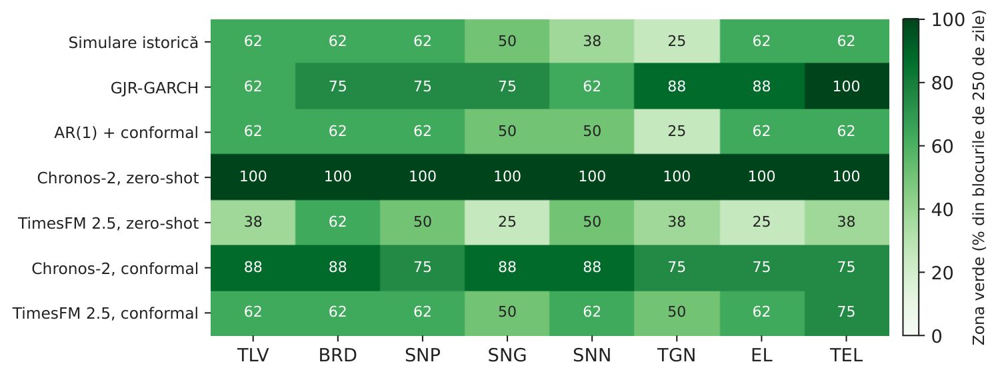
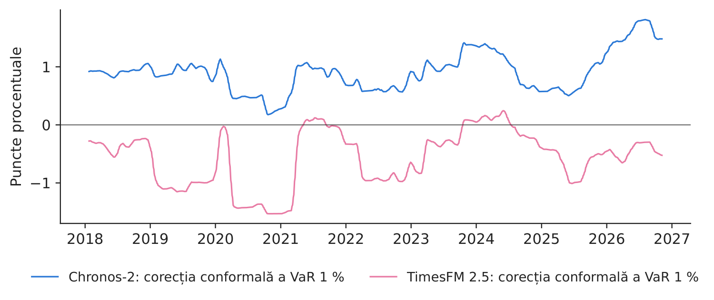
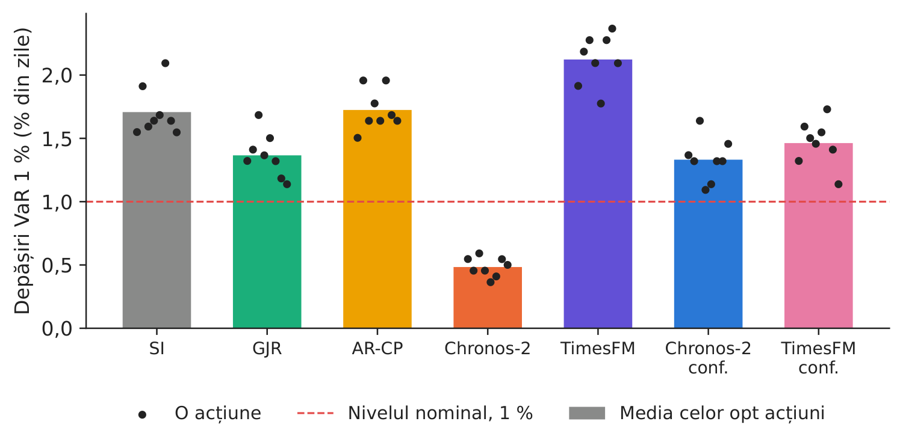

Studiul de caz 6 · Cursul 13
Pot modelele fundație gestiona riscul?
Prof. dr. Daniel Traian PELE
Academia de Studii Economice din București, Departamentul de Statistică și Econometrie
Academia Română, Institutul de Prognoză Economică
Lucrarea de referință
Jheng, S.-L., Tak, R., Găman, Ș., Mazurencu-Marinescu-Pele, M. și Pele, D. T. (2026). Can foundation models manage risk? Zero-shot VaR and ES forecasting with conformal calibration in CEE markets. Economic Computation and Economic Cybernetics Studies and Research, 60(2), 267–290. doi:10.24818/18423264/60.2.26.14
Problema decizională
Comitetul de risc al unei societăți de administrare a investițiilor din România stabilește, în fiecare seară, o limită zilnică de pierdere pentru fiecare poziție pe acțiuni: valoarea la risc (VaR, Value-at-Risk), adică pierderea care ar trebui depășită numai în 1 % din zile, și pierderea așteptată în coada distribuției (ES, Expected Shortfall), adică pierderea medie din zilele cele mai nefavorabile. Un furnizor oferă un model fundație pentru serii de timp, preantrenat, care prognozează orice serie fără nicio adaptare. Directorul de risc pune două întrebări: poate un model care nu a văzut niciodată acțiuni românești să producă un VaR zilnic care trece testele Basel și ce trebuie adăugat înainte ca modelul să fie folosit pentru o limită? O limită prea mică produce depășiri, majorări ale cerinței de capital și întrebări din partea autorității de supraveghere; o limită prea mare imobilizează capital și blochează tranzacțiile.
Lucrarea de referință
Întrebarea de cercetare. Pot modelele fundație moderne pentru serii de timp (TSFM, time series foundation models) să producă, fără antrenare suplimentară (zero-shot), prognoze VaR și ES de calitatea cerută de reglementări pentru piețele din Europa Centrală și de Est (ECE)? Poate calibrarea conformală să acopere diferența rămasă pînă la conformitatea deplină cu standardele Basel (p. 268)?
Datele. Zece serii de randamente zilnice din cinci piețe ECE: indicii bursieri BET (România), WIG20, PX, BUX și SOFIX și cursurile de schimb ale euro față de leul românesc (RON), zlotul polonez, coroana cehă și forintul maghiar, precum și al dolarului american față de levă, ianuarie 2007 – decembrie 2025; perioada de evaluare este ianuarie 2018 – decembrie 2025, circa 2.000 de zile de tranzacționare (Tabelul 1, p. 270–271). Toate seriile au cozi groase (Tabelul 2).
Metoda. Trei modele TSFM folosite zero-shot, cu un context de 512 zile — Chronos-2 (120 de milioane de parametri), TimesFM 2.5 (Time Series Foundation Model, 200 de milioane) și Moirai 2.0 (11,4 milioane) — sînt comparate cu simularea istorică (SI), cu un model GJR-GARCH(1,1) cu inovații Student asimetrice și cu prognoze ale unui model autoregresiv integrat cu medie mobilă (ARIMA) și ale unei rețele LSTM (Long Short-Term Memory) transformate în VaR prin predicție conformală (Tabelul 3, p. 273). Chronos-2 și TimesFM 2.5 furnizează nouă decile; o distribuție Student ajustată la acestea prin potrivirea cuantilelor dă VaR și ES la 1 % și 2,5 % (secțiunea 3.2.3). Un strat de calibrare conformală glisantă, cu o fereastră de 250 de zile, corectează fiecare TSFM (ec. 5–6). Testarea retrospectivă folosește testele Kupiec și Christoffersen, testul \(Z_2\) al lui Acerbi și Székely pentru ES, semaforul Basel și testele Diebold–Mariano (DM) pe funcția de pierdere tick (secțiunea 3.2.5).
Principalele rezultate ale lucrării.
- Toate cele trei modele TSFM fără calibrare ating rate competitive în zona verde Basel; Chronos-2 ajunge la 90 %, la fel ca GJR-GARCH, cu o rată medie a depășirilor VaR 1 % de 1,09 % (p. 276, Tabelul 4).
- Calibrarea conformală ridică modelul Chronos-2-Conf la cea mai mare rată în zona verde, 96,7 %, și la cea mai bună statistică pentru ES, un \(Z_2\) mediu de 0,23, singura valoare pozitivă; modelele TSFM fără calibrare au \(Z_2\) între \(-\)0,71 și \(-\)1,18 (Tabelul 5, p. 279–280).
- Modelele fundație calibrate conformal ocupă primul loc după rata zonei verzi și au pierderi tick mai mici decît majoritatea modelelor de referință în testele Diebold–Mariano (Figurile 5–6, p. 281–282); în episoadele COVID-19 și în 2022, la începutul războiului, își revin mai repede, deoarece scorurile glisante preiau erorile recente (p. 282–283).
- Stratul de calibrare nu necesită reantrenare sau date proprietare și funcționează ca o etapă de postprocesare pentru orice model fundație (p. 283).
Altă lucrare a grupului nostru relevantă pentru cursul 13: modelele lingvistice mari ca modele de risc zero-shot (Pele et al., 2026, Expert Systems with Applications 295, 128676, doi:10.1016/j.eswa.2025.128676; studiul de caz 5).
Metoda, pas cu pas
Intuiția metodei
Un model fundație a „citit” milioane de serii din energie, comerț, trafic și meteorologie; el „știe” ce urmează de obicei după o perioadă calmă sau agitată și furnizează un set complet de cuantile pentru ziua următoare. Modelul nu a văzut acțiuni românești, de aceea cuantilele sale pot fi puțin prea înguste sau prea largi. Calibrarea conformală funcționează ca un termostat: verifică de cîte ori a fost depășit VaR-ul modelului în ultimele 250 de zile și deplasează VaR-ul de azi exact cu valoarea care ar fi produs rata corectă a depășirilor.
Fie \(r_t=100\ln(P_t/P_{t-1})\) randamentul logaritmic zilnic, în procente, unde \(P_t\) este prețul de închidere ajustat pentru dividende și divizări. Pentru o poziție lungă, \(\mathrm{VaR}_{\alpha,t}=F_t^{-1}(\alpha)\) este cuantila de ordin \(\alpha\) a distribuției prognozate \(F_t\) a lui \(r_t\), condiționată de informația pînă în \(t-1\), iar \(\mathrm{ES}_{\alpha,t}=\mathbb{E}[r_t\mid r_t\le\mathrm{VaR}_{\alpha,t}]\) (ec. 1–2 din lucrare; ambele sînt randamente negative). Folosim \(\alpha=1\,\%\) și \(2{,}5\,\%\). Modelele de referință. SI: cuantila empirică de ordin \(\alpha\) și media cozii pentru ultimele \(W=250\) de randamente. GJR-GARCH: \(r_t=\mu+\varepsilon_t\), \(\varepsilon_t=\sigma_t z_t\), \(\sigma_t^2=\omega+a\,\varepsilon_{t-1}^2+\gamma\,\varepsilon_{t-1}^2\mathbf{1}(\varepsilon_{t-1}<0)+\beta\sigma_{t-1}^2\) (ec. 3), unde \(z_t\) urmează o distribuție Student asimetrică, cu \(\nu\) grade de libertate și parametrul de asimetrie \(\lambda\); \(\mathrm{VaR}=\mu+\sigma_t q_\alpha(z)\), \(\mathrm{ES}=\mu+\sigma_t\,\mathbb{E}[z\mid z\le q_\alpha(z)]\); modelul este reestimat zilnic pe ultimele 250 de randamente. AR(1) cu predicție conformală: \(\hat r_t=c+\phi r_{t-1}\), estimat pe ultimele 250 de zile, \(\mathrm{VaR}_{\alpha,t}=\hat r_t+Q_\alpha(\{r_i-\hat r_i\}_{i=t-250}^{t-1})\) (ec. 4), unde \(Q_\alpha\) este cuantila empirică de ordin \(\alpha\). Modelele fundație. Pe baza ultimelor 512 randamente, Chronos-2 și TimesFM 2.5 furnizează decilele \(q_k\) pentru \(\tau_k=0{,}1,\dots,0{,}9\). Estimăm \((\mu,\sigma,\nu)\) prin \(\min\sum_{k=1}^{9}\big(q_k-\mu-\sigma\,t_\nu^{-1}(\tau_k)\big)^2\), unde \(t_\nu^{-1}\) este funcția cuantilă a distribuției Student cu \(\nu\) grade de libertate, și obținem \(\mathrm{VaR}_\alpha=\mu+\sigma t_\nu^{-1}(\alpha)\) și \(\mathrm{ES}_\alpha=\mu-\sigma\,\frac{f_\nu(t_\nu^{-1}(\alpha))}{\alpha}\,\frac{\nu+(t_\nu^{-1}(\alpha))^2}{\nu-1}\), unde \(f_\nu\) este densitatea distribuției Student. Calibrarea conformală. Scorurile sînt \(s_i=r_i-\mathrm{VaR}^{brut}_{\alpha,i}\) pentru \(i=t-250,\dots,t-1\), iar \(\mathrm{VaR}^{conf}_{\alpha,t}=\mathrm{VaR}^{brut}_{\alpha,t}+Q_\alpha(\{s_i\})\) (ec. 5–6); deplasăm ES cu aceeași valoare. Testarea retrospectivă. Cu \(I_t=\mathbf{1}(r_t<\mathrm{VaR}_{\alpha,t})\), \(N=\sum_t I_t\) depășiri în \(T\) zile și \(\hat\alpha=N/T\): \(LR_{UC}=-2\ln[(1-\alpha)^{T-N}\alpha^N]+2\ln[(1-\hat\alpha)^{T-N}\hat\alpha^N]\sim\chi^2(1)\) (Kupiec, ec. 7); \(LR_{CC}=LR_{UC}+LR_{IND}\sim\chi^2(2)\), unde \(LR_{IND}\) testează independența depășirilor față de un lanț Markov de ordinul întîi (Christoffersen, ec. 8); \(Z_2=1-\frac{1}{T\alpha}\sum_t I_t\,r_t/\mathrm{ES}_{\alpha,t}\) (ec. 9, scrisă pentru ES negativ; \(Z_2<0\) înseamnă că ES subestimează pierderile), cu valoarea \(p\) obținută prin 1.000 de reeșantionări bootstrap; semaforul Basel pe blocuri de 250 de zile, la 1 %: verde pentru 0–4 depășiri, galben pentru 5–9, roșu pentru 10 sau mai multe. Pierderea tick este \(L^{\tau}_t=(\alpha-I_t)(r_t-\mathrm{VaR}_{\alpha,t})\); pierderea FZ0 a lui Patton, Ziegel și Chen (2019) pentru perechea (VaR, ES) este \(L^{FZ}_t=-\frac{I_t(\mathrm{VaR}_t-r_t)}{\alpha\,\mathrm{ES}_t}+\frac{\mathrm{VaR}_t}{\mathrm{ES}_t}+\ln(-\mathrm{ES}_t)-1\). Testul Diebold–Mariano: \(DM=\bar d/\sqrt{\hat V(\bar d)}\), unde \(d_t\) este diferența pierderilor tick dintre două modele, mediată pe acțiuni, iar \(\hat V\) este varianța Newey–West; \(DM<0\) înseamnă că primul model are pierderea mai mică.
În practică
Judecați un model de risc după testarea retrospectivă, nu după mărimea sa: numărați depășirile pe 250 de zile, testați gruparea lor și severitatea cozii și păstrați un strat de calibrare care poate fi verificat pas cu pas.
Replicare pe datele cursului
Notebook-ul C6_notebook_RO.ipynb folosește prețurile zilnice de închidere, ajustate pentru dividende și divizări, ale celor 8 acțiuni de la Bursa de Valori București (BVB), începînd din 2015, descărcate de la EODHD (EOD Historical Data): Banca Transilvania (TLV), BRD - Groupe Société Générale (BRD), OMV Petrom (SNP), Romgaz (SNG), Nuclearelectrica (SNN), Transgaz (TGN), Electrica (EL) și Transelectrica (TEL); păstrăm numai zilele cu volum tranzacționat.
Perioada de evaluare este 17.01.2018 – 06.11.2026: 17.572 de observații (acțiune \(\times\) zi) pentru fiecare model și nivel și 64 de blocuri de 250 de zile pentru semaforul Basel. Randamentele au cozi groase (aplatizare între 7,3 și 26,2) și, în unele zile, o tranzacționare redusă (între 7,8 și 15,6 % din zilele de tranzacționare au prețul neschimbat; Tabelul 1).
Față de lucrare, implementarea de la curs folosește opt acțiuni românești în locul celor zece indici și cursuri de schimb din ECE; modelele Chronos-2 și TimesFM 2.5 (ambele cu ieșiri sub formă de decile), fără Moirai 2.0; un model AR(1) în locul modelului ARIMA și nicio rețea LSTM conformală; numărul gradelor de libertate al distribuției Student este căutat pe o grilă între 2,1 și 60 (lucrarea folosește algoritmul Nelder–Mead). Prognozele modelelor fundație durează circa patru minute pe un laptop cu procesor grafic Apple și sînt salvate.
Tabelul 1. Randamentele logaritmice zilnice (%) ale celor opt acțiuni BVB în perioada de evaluare.
| Acțiunea | \(N\) | Media | Abaterea std. | Asimetria | Aplatizarea | Min | Max | Zile fără variație (%) |
|---|---|---|---|---|---|---|---|---|
| TLV | 2.205 | 0,094 | 1,59 | \(-\)1,37 | 26,2 | \(-\)22,2 | 11,2 | 8,3 |
| BRD | 2.207 | 0,070 | 1,63 | \(-\)0,52 | 13,5 | \(-\)18,2 | 10,3 | 7,8 |
| SNP | 2.207 | 0,112 | 1,49 | \(-\)0,78 | 14,9 | \(-\)15,0 | 10,0 | 7,8 |
| SNG | 2.207 | 0,108 | 1,43 | \(-\)0,33 | 7,9 | \(-\)11,0 | 7,0 | 9,2 |
| SNN | 2.207 | 0,139 | 1,56 | 0,27 | 8,2 | \(-\)9,4 | 11,3 | 8,7 |
| TGN | 2.207 | 0,078 | 1,57 | 0,05 | 8,8 | \(-\)10,1 | 11,1 | 11,1 |
| EL | 2.207 | 0,083 | 1,72 | 0,13 | 9,2 | \(-\)11,8 | 14,4 | 9,8 |
| TEL | 2.207 | 0,073 | 1,63 | 0,05 | 7,3 | \(-\)9,3 | 7,6 | 15,6 |
Sursa: EODHD; calcule proprii. Aplatizarea este cea absolută (valoarea 3 corespunde distribuției normale).

Figura 1. Banca Transilvania (TLV): randamentul zilnic și VaR la 1 % pentru ziua următoare, după trei modele.
Sursa: EODHD; prognozele noastre; 17.01.2018 – 06.11.2026. Axa este trunchiată la \(-16\,\%\).
Tabelul 2. VaR la 1 %: testarea retrospectivă pentru cele opt acțiuni. Respingerile sînt numărate din 8 acțiuni, la pragul de 5 %; Verde = ponderea celor 64 de blocuri de 250 de zile cu cel mult 4 depășiri. Cea mai bună valoare este marcată cu aldine.
| Modelul | Depășiri (%) | Resp. Kupiec | Resp. Christoff. | Verde (%) | Pierdere tick (pb) | DM față de SI | DM față de GJR |
|---|---|---|---|---|---|---|---|
| Simulare istorică | 1,71 | 8 | 8 | 53,1 | 6,50 | – | 2,27 |
| GJR-GARCH | 1,37 | 2 | 2 | 78,1 | 5,68 | \(-\)2,27 | – |
| AR(1) + conformal | 1,72 | 8 | 8 | 54,7 | 6,52 | 0,82 | 2,40 |
| Chronos-2, zero-shot | 0,48 | 8 | 5 | 100,0 | 6,10 | \(-\)0,85 | 2,70 |
| TimesFM 2.5, zero-shot | 2,12 | 8 | 8 | 40,6 | 5,90 | \(-\)3,24 | 1,06 |
| Chronos-2, conformal | 1,33 | 2 | 1 | 81,2 | 6,06 | \(-\)1,00 | 3,42 |
| TimesFM 2.5, conformal | 1,46 | 5 | 4 | 60,9 | 5,86 | \(-\)2,58 | 1,36 |
Sursa: calcule proprii; pierderea tick este exprimată în puncte de bază (pb); DM = statistica Diebold–Mariano a diferenței pierderilor tick, pozitivă atunci cînd modelul are pierderea mai mare. Lucrarea (10 serii din ECE, 2018–2025): rata zonei verzi este de 90 % pentru Chronos-2 și GJR-GARCH și de 96,7 % pentru Chronos-2-Conf (p. 276).
Ce arată datele. Modelele fundație folosite zero-shot se situează de o parte și de alta a țintei. Decilele modelului Chronos-2 implică cozi foarte groase (mediana lui \(\nu\) estimat este 2,2), astfel că VaR la 1 % este depășit numai în 0,48 % din zile: modelul este în zona verde în toate blocurile, dar testul Kupiec îl respinge pentru toate cele opt acțiuni — pentru că are prea puține depășiri —, iar limita sa medie este cea mai largă dintre toate modelele. TimesFM 2.5 implică cozi mai subțiri (\(\nu\) = 5,6) și este depășit în 2,12 % din zile (zona verde: 40,6 %). Calibrarea conformală le corectează pe amîndouă în direcția potrivită: în medie, deplasează VaR al modelului Chronos-2 cu 0,91 puncte procentuale (în sus, spre o limită mai puțin prudentă) și VaR al modelului TimesFM cu \(-\)0,57 puncte procentuale (în jos, spre o limită mai prudentă; Figura 3). Modelul Chronos-2 conformal are apoi 1,33 % depășiri, o rată a zonei verzi de 81,2 % (GJR-GARCH: 78,1 %), respingeri Kupiec pentru 2 din 8 acțiuni (GJR-GARCH: 2) și cele mai puține respingeri Christoffersen (Tabelul 2). Pentru ES la 2,5 %, rezultatul este cel din lucrare: modelul Chronos-2 conformal are \(Z_2\) mediu cel mai apropiat de zero, 0,10 (în lucrare: 0,23), și nicio respingere, în timp ce simularea istorică (\(-\)0,49) și GJR-GARCH (\(-\)0,32) subestimează coada (Tabelul 3). După funcțiile de pierdere, GJR-GARCH are cele mai mici pierderi tick și FZ0 pe aceste acțiuni individuale; statistica DM a modelului Chronos-2 conformal față de GJR-GARCH este 3,42 (\(p\) = 0,001), iar față de simularea istorică \(-\)1,00. Eșantionul lucrării este format din indici și cursuri de schimb; pentru acțiuni individuale, cu tranzacționare redusă în unele zile, un model GJR-GARCH reestimat zilnic rămîne un reper puternic.

Figura 2. Semaforul Basel: ponderea blocurilor de 250 de zile aflate în zona verde, pe modele și acțiuni.
Sursa: testarea noastră retrospectivă; VaR la 1 %.

Figura 3. Corecția conformală a VaR la 1 %, media celor opt acțiuni (medie mobilă pe 21 de zile).
Sursa: calcule proprii; valoare pozitivă = VaR mai ridicat (mai puțin prudent).
Tabelul 3. ES la 2,5 %: statistica \(Z_2\) a lui Acerbi și Székely (bootstrap, 1.000 de reeșantionări; respingeri din 8 acțiuni, la pragul de 5 %) și pierderea FZ0. Cea mai bună valoare este marcată cu aldine.
| Modelul | Depășiri (%) | \(Z_2\) mediu | \(Z_2\) minim | \(Z_2\) maxim | Resp. \(Z_2\) | Pierdere FZ0 |
|---|---|---|---|---|---|---|
| Simulare istorică | 3,39 | \(-\)0,49 | \(-\)0,74 | \(-\)0,36 | 8 | 1,608 |
| GJR-GARCH | 3,24 | \(-\)0,32 | \(-\)0,49 | \(-\)0,13 | 5 | 1,445 |
| AR(1) + conformal | 3,35 | \(-\)0,49 | \(-\)0,66 | \(-\)0,38 | 8 | 1,611 |
| Chronos-2, zero-shot | 2,10 | 0,34 | 0,26 | 0,51 | 0 | 1,490 |
| TimesFM 2.5, zero-shot | 4,54 | \(-\)0,94 | \(-\)1,06 | \(-\)0,71 | 8 | 1,508 |
| Chronos-2, conformal | 3,00 | 0,10 | 0,01 | 0,23 | 0 | 1,521 |
| TimesFM 2.5, conformal | 3,11 | \(-\)0,35 | \(-\)0,41 | \(-\)0,27 | 7 | 1,476 |
Sursa: calcule proprii. Lucrarea (Tabelul 5): \(Z_2\) mediu de 0,23 pentru Chronos-2-Conf, \(-\)0,44 pentru GJR-GARCH, \(-\)0,48 pentru simularea istorică și \(-\)0,71 pentru Chronos-2 fără calibrare.
Cifra relevantă pentru decizie. Pentru o poziție de 10 milioane RON în fiecare acțiune, limita zilnică medie dată de VaR la 1 % este de 377 mii RON cu GJR-GARCH, de 504 mii RON cu Chronos-2 fără calibrare și de 417 mii RON cu Chronos-2 conformal. Modelul fără calibrare își obține semaforul perfect cu o limită mai mare cu aproximativ 87 mii RON pe poziție și pe zi și cu numai 4,8 depășiri la 1.000 de zile (ținta: 10); varianta conformală eliberează acest capital, la 13,3 depășiri la 1.000 de zile, aproape de GJR-GARCH (13,7).
Întrebări pentru discuție
- Chronos-2 fără calibrare este în zona verde în toate blocurile, dar testul Kupiec îl respinge peste tot. L-ați aproba ca model pentru limite? Ce nu vede semaforul Basel?
- Calibrarea conformală are nevoie numai de ultimele 250 de erori de prognoză. Cine din companie ar trebui să răspundă de ea și cum ați documenta-o pentru autoritatea de supraveghere?
- GJR-GARCH are cea mai mică pierdere tick pe acțiunile noastre, iar Chronos-2 conformal are cel mai bun rezultat la testarea ES. Ce criteriu contează mai mult pentru o limită zilnică și care pentru capital?
- Un model fundație este un produs al unui furnizor care își poate schimba versiunea de la o zi la alta. Ce controale ați cere (o nouă testare retrospectivă, fixarea versiunii, un model de rezervă)?
- Unele acțiuni de la BVB se tranzacționează rar și închid adesea la același preț. Cum afectează acest lucru orice model VaR și ați stabili limitele pe acțiuni individuale sau pe portofoliu?
Limitele replicării
(i) Eșantionul nostru este format din opt acțiuni individuale de pe o singură piață, în timp ce lucrarea folosește zece indici și cursuri de schimb din cinci piețe; rezultatele pentru acțiuni individuale nu se transferă neapărat la indici. (ii) Folosim două dintre cele trei modele fundație din lucrare și variante mai simple ale modelelor de referință ARIMA și LSTM. (iii) Distribuția Student este ajustată numai la nouă decile, deci cuantila de 1 % este o extrapolare, așa cum se precizează și în lucrare (p. 284); limita inferioară de 2,1 grade de libertate este atinsă pentru multe dintre prognozele Chronos-2. (iv) ES al modelelor conformale este deplasat cu corecția VaR, una dintre mai multe alegeri posibile. (v) Poziția de 10 milioane RON este o constantă aleasă pentru ilustrare; calculul ignoră costurile de lichiditate ale vînzării unui pachet mare dintr-o acțiune cu tranzacționare redusă.
Studiul de caz 6 pe scurt
- ÎntrebarePoate un model fundație preantrenat să stabilească o limită zilnică VaR pentru acțiuni românești?
- Date8 acțiuni BVB, randamente zilnice; evaluare 2018–2026, 17.572 de observații.
- MetodăChronos-2, TimesFM 2.5 zero-shot + ajustare Student; calibrare conformală glisantă; SI, GJR-GARCH, AR(1) conformal.
- RezultatDepășiri la 1 %: 0,48 % fără calibrare, 1,33 % cu calibrare (GJR 1,37 %); cel mai bun \(Z_2\) pentru ES: Chronos-2 conformal (0,10).
- DecizieFolosiți modelul fundație numai cu calibrare conformală și testare retrospectivă completă; păstrați GJR-GARCH ca reper.

Sursa: prognozele noastre pe date EODHD; VaR la 1 %, 17.01.2018 – 06.11.2026.
Abrevieri
| AR | autoregresiv |
|---|---|
| ARIMA | model autoregresiv integrat cu medie mobilă |
| BET | Bucharest Exchange Trading, indicele principal al Bursei de Valori București |
| BRD | simbolul bursier al BRD – Groupe Société Générale |
| BVB | Bursa de Valori București |
| DM | Diebold–Mariano |
| ECE | Europa Centrală și de Est |
| EL | simbolul bursier al Electrica |
| EODHD | EOD Historical Data, furnizor de date de piață |
| ES | Expected Shortfall |
| GARCH | heteroscedasticitate condiționată autoregresivă generalizată |
| GJR-GARCH | modelul GARCH Glosten–Jagannathan–Runkle |
| LSTM | Long Short-Term Memory |
| RON | leul românesc |
| SI | simulare istorică |
| SNG | simbolul bursier al Romgaz |
| SNN | simbolul bursier al Nuclearelectrica |
| SNP | simbolul bursier al OMV Petrom |
| TEL | simbolul bursier al Transelectrica |
| TGN | simbolul bursier al Transgaz |
| TimesFM | Time Series Foundation Model |
| TLV | simbolul bursier al Banca Transilvania |
| TSFM | model fundație pentru serii de timp |
| VaR | Value-at-Risk |
Textul, cifrele, graficele și tabelele acestei pagini sînt cele ale studiului de caz; toate cifrele sînt calculate de notebook-ul studiului pe datele cursului.